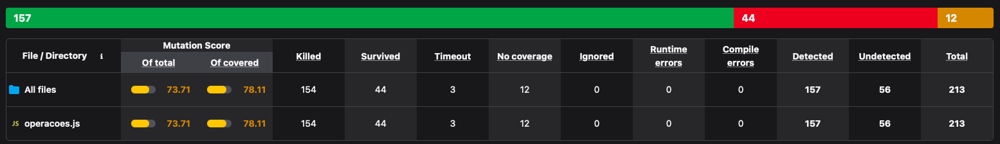
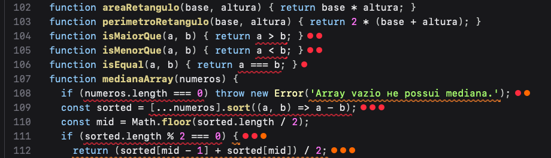
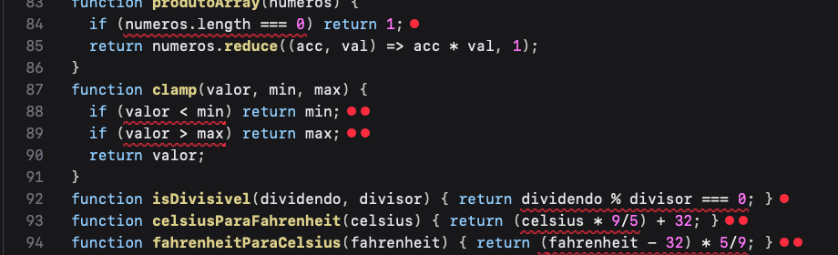
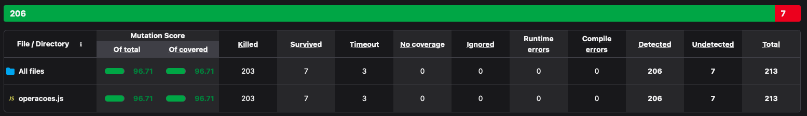
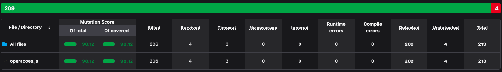

Primeiro rodei os 50 testes que já vinham no projeto com npm test -- --coverage. Todos passaram. Depois configurei o StrykerJS com o runner do Jest e executei npx stryker run, que gerou 213 mutantes a partir do arquivo src/operacoes.js.
| Medida (execução inicial) | Resultado |
|---|---|
| Cobertura de funções / linhas | 100% / 98,64% |
| Cobertura de statements / branches | 85,41% / 58,82% |
| Mutation score | 73,71% |
| Mutantes mortos / timeout / vivos / sem cobertura | 154 / 3 / 44 / 12 |

A diferença entre os dois números é grande. Pela cobertura, 100% das funções e quase todas as linhas são executadas, o que parece uma suíte boa. Mas só 73,71% dos defeitos inseridos pelo Stryker foram percebidos pelos testes, e 56 mutantes passaram sem nenhum teste falhar. A cobertura só diz que a linha rodou, não diz se algum teste conferiu o resultado dela. Aqui cada função tem um único teste com uma entrada simples, e a cobertura de branches (58,82%) já indicava que quase nenhum caminho de erro ou de fronteira era exercitado.
Escolhi três grupos de mutantes que sobreviveram na primeira execução. Em todos eles o problema estava nos testes, e não no código, ou seja, são mutantes não-equivalentes.
Na linha 104 o Stryker trocou a > b por a >= b, e na linha 105 trocou a < b por a <= b. Também gerou a versão return true das duas funções. Todos sobreviveram.
O teste 44 só chama isMaiorQue(10, 5) e o 45 só chama isMenorQue(5, 10), os dois com resposta verdadeira. Para esses valores o original e o mutante respondem igual. Faltou o caso em que a é igual a b, que é onde > e >= se diferenciam, e faltou um caso com resposta falsa. Por exemplo, na aula vimos a função max(x, y), em que o mutante sobrevive enquanto nenhum teste usa uma entrada que distinga os dois programas. Lá o par (4, 4) não distinguia > de <; aqui o par a === b é justamente o que distingue > de >=.

Na linha 93, celsius * 9/5 virou celsius * 9 * 5 e também celsius / 9/5. Na linha 94, (f - 32) * 5/9 virou (f - 32) * 5 * 9 e (f - 32) / 5/9. Os quatro sobreviveram.
Os testes 38 e 39 usam só 0 °C e 32 °F. Com 0 °C o termo celsius * ... vale zero em qualquer versão, e com 32 °F o termo (f - 32) zera tudo. As fórmulas erradas devolvem 32 e 0, que é justamente o esperado. É a mesma coincidência do fatorial(3) visto em aula: o valor escolhido dá o mesmo resultado do mutante e o teste passa por acaso.

clamp, isDivisivel e das conversões de temperatura.Nas linhas 109 a 112 o Stryker removeu o .sort(...), trocou o comparador por () => undefined e por a + b, e esvaziou o bloco if (sorted.length % 2 === 0) { ... }. Dentro desse bloco ainda gerou três mutações aritméticas, todas sem cobertura.
O único teste (47) usa [1, 2, 3, 4, 5], que já está ordenado, então tirar ou estragar o sort não muda nada. Como o array tem tamanho ímpar, o bloco do caso par nunca é executado. Aqui a cobertura de linhas também engana: as linhas 109 a 111 constavam como cobertas e mesmo assim cinco mutantes sobreviveram nelas.
Mantive os 50 testes originais e acrescentei 28 em test/operacoes.test.js, totalizando 78. Os primeiros 25 mataram os mutantes não-equivalentes dos grupos analisados acima e dos demais; os 3 últimos usam entradas de borda do JavaScript e vieram de uma segunda rodada, explicada na seção 4. Os testes estão agrupados por tipo de fraqueza e cada um tem um comentário com os mutantes que ele mata. Segui quatro cuidados: testar valores de fronteira, testar também o lado falso das decisões, escolher valores que não coincidam com o resultado do mutante e conferir a mensagem das exceções (um toThrow() sem argumento aceita qualquer erro, até uma mensagem trocada por texto vazio).
expect(isMaiorQue(5, 5)).toBe(false); // mata >=
expect(isMenorQue(5, 5)).toBe(false); // mata <=
expect(celsiusParaFahrenheit(100)).toBe(212);
expect(fahrenheitParaCelsius(212)).toBe(100);
expect(medianaArray([3, 1, 2])).toBe(2); // exige o sort
expect(medianaArray([1, 2, 3, 4])).toBe(2.5); // executa o ramo par
expect(clamp(-0, 0, 10)).toBe(-0); // distingue -0 de +0
expect(produtoArray({ length: 0 })).toBe(1); // entrada array-like
Esses testes funcionam porque só a fórmula correta dá 212 para 100 °C (a versão *9*5 daria 4532 e a /9/5 daria cerca de 34,2). Em isMaiorQue(5, 5) o original devolve falso e o mutante >= devolve verdadeiro. A mediana de [3, 1, 2] só é 2 se o array for ordenado antes, e [1, 2, 3, 4] obriga a executar o ramo par, cujo resultado correto (2,5) muda com qualquer uma das três mutações aritméticas. Os demais sobreviventes foram tratados do mesmo jeito: mensagens e condições dos erros, mediaArray([]), respostas falsas de isPar, isImpar, isDivisivel e isEqual, isPrimo com 0, 1, negativos e compostos, e clamp abaixo e acima do intervalo. Os 78 testes passam no código original.
| Execução | Mortos | Timeout | Vivos | Score |
|---|---|---|---|---|
| Inicial, 50 testes | 154 | 3 | 44 + 12 sem cobertura | 73,71% |
| Com 75 testes | 203 | 3 | 7 | 96,71% |
| Final, com 78 testes | 206 | 3 | 4 | 98,12% |


A cobertura final é de 100% em statements, branches, funções e linhas (antes eram 85,41% e 58,82% nos dois primeiros), e o mutation score foi de 73,71% para 98,12%. Mesmo com 100% de cobertura ainda restam 4 mutantes vivos, o que confirma que cobertura não garante a detecção dos defeitos.
Depois do 96,71% analisei os 7 mutantes que sobraram. Três deles (produtoArray linha 84 e clamp linhas 88 e 89) pareciam equivalentes, porque com números e arrays comuns nenhum teste os distingue. Mas eles só são equivalentes para entradas comuns: com -0 o clamp devolve 0 no mutante e -0 no original (o toBe usa Object.is e percebe), e com o objeto { length: 0 } o mutante do produtoArray chama reduce e lança erro. Acrescentei esses 3 testes e os 3 mutantes morreram, chegando aos 98,12%. São entradas fora do uso normal das funções, mas mostram que a equivalência depende das entradas consideradas.
Os 4 que continuam vivos estão na linha 19 do fatorial (if (n === 0 || n === 1) return 1) e são equivalentes em qualquer entrada: para n = 0 e n = 1 o laço não executa e o resultado já é 1, então o if é redundante. É um equivalente por redundância; o do exemplo da aula era a reescrita resultado = resultado * i, mas a definição é a mesma, comportamento idêntico ao original. No script evidencias/prova-equivalentes.js comparei original e mutante com 202 entradas por mutante, incluindo NaN, -0, textos, BigInt e objetos com valueOf, sem nenhuma diferença.
Pela fórmula da aula, score = 100 × D / (N − E), com N = 213, E = 4 e D = 209 (206 mortos mais 3 timeouts), o resultado é 100 × 209 / 209 = 100%. O Stryker mostra 98,12% porque não sabe que esses 4 são equivalentes. Não marquei nenhum mutante como ignorado e não alterei o código: src/operacoes.js está idêntico ao original.
O trabalho mostrou na prática que cobertura de código e qualidade dos testes não são a mesma coisa: o projeto tinha 100% das funções e 98,64% das linhas cobertas e, mesmo assim, mais de um quarto dos defeitos inseridos passava despercebido. O teste de mutação responde se os testes realmente falhariam diante de um bug e ainda indica onde está a fraqueza, seja uma fronteira não testada, um valor que coincide com o resultado errado, uma mensagem de erro sem verificação ou um ramo que nunca executa. Também aprendi que nem todo mutante vivo é culpa da suíte, e que separar os equivalentes dos não-equivalentes evita tanto o esforço inútil de tentar matar o impossível quanto o risco de apenas ajustar a nota. A equivalência também depende das entradas: três mutantes que pareciam equivalentes foram mortos com entradas de borda. O custo de rodar os testes para cada mutante existe, mas aqui valeu a pena.